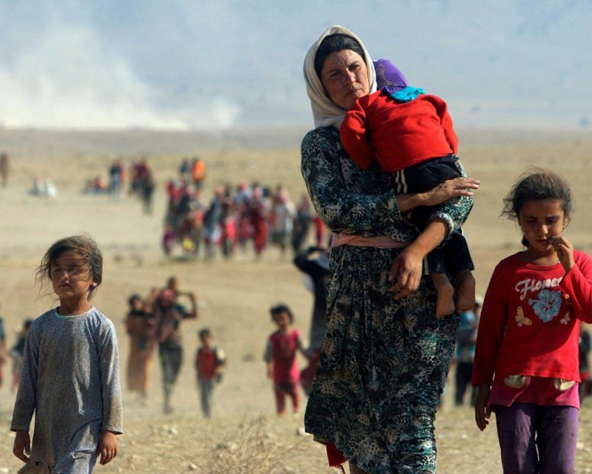
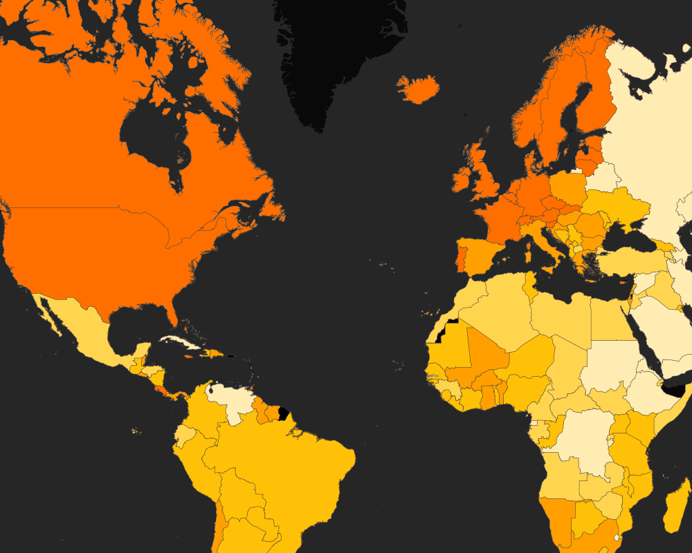
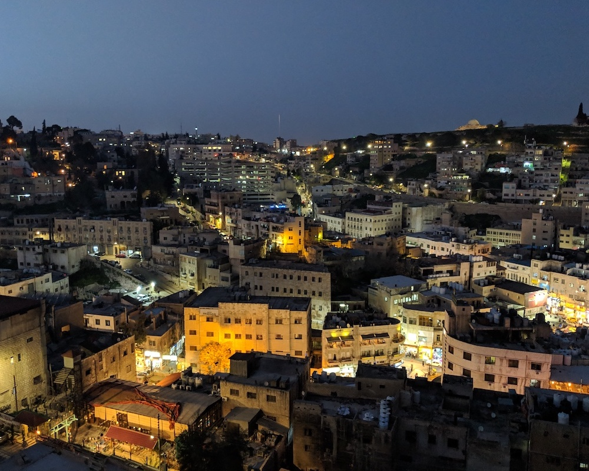
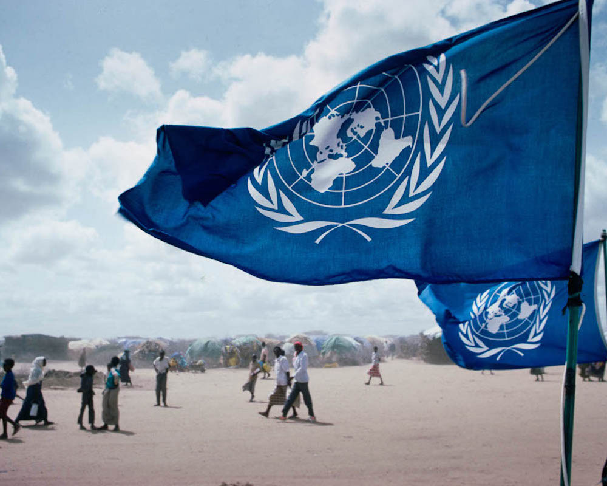

Going Forward: Donor Recommendations for Disarmament, Demobilization, and Reintegration (DDR) in Iraq
This report (written from the perspective of a donor) considered options for DDR in Iraq following the recapture of ISIL-controlled territory by coalition forces in 2017. Amid widespread destruction and massive displacement, gains against ISIL signalled a possibile turning point. As a modicum of stability finally appeared within sight, the question of whether or not a DDR program in Iraq was feasible arose. Noting that the UN previously implemented several programs in Afghanistan under similar circumstances and failed, I argued that despite the risk, if done correctly and mindfully, a DDR initative could contribute toward a long-term peace.

Mapping Measures of Fragility
For this project, I compared different measures of state fragility across countries on a single, interactive map, created using Carto, Mapbox, and Javascript. The data is from six different datasets compiled by NGOs and intergovernmental agencies: Freedom House’s Freedom in the World 2018 and Freedom of the Press 2017 datasets, UNDP’s Human Development Index 2015, the Fragile States Index 2017 by the Fund for Peace, the World Bank’s Gini Index 2015, and Transparency International’s Corruption Perceptions Index 2017. Since each index measures a different aspect of fragility from the perspective of different organizations with their own specialties and biases, new comparisons and insights can be gained.

Walking Blind: Mapping the Information Gaps of Syrian Refugees in Jordan
How might humanitarians enable refugees to have access to complete, timely, and easily digestible information so that they are well-informed, receive the maximum level of care available, and are less likely to be subjected to a potentially dangerous or life-threatening situation when undertaking a return? Following a week in Amman, Jordan consulting with the International Rescue Committee (IRC) and representatives from other humanitarian NGOs working on durable solutions for Syrian refugees, I explored the different needs, risks, moral implications, and benefits of a tool to reduce information gaps for Syrian refugees considering a spontaneous return.

Tomorrow is Too Late: A Renewed Focus on Anticipatory Financing
For my capstone project, my team consulted with UN OCHA on formulating an outreach strategy for increasing the use of anticipatory financing methods, specifically with regard to famine relief. The yearlong project culminated in two informational pamphlets and a promotional video (with a separate version translated into Arabic), each meant to educate general audiences and engage high-level stakeholders on the need for policy that is less reactive and more effective.